Daybook · diary & task app
Everything about your day, in one place.
Tasks, notes, a diary, a calendar and a log of where the day went. Say it or snap it, and the assistant does the sorting.
Ahmed’s September, in two and a half minutes
An anime Ahmed, a real city, and the real app on his phone. Jump to any moment below.
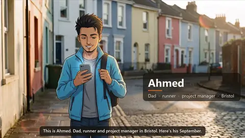
0:00Meet AhmedDad, runner and project manager in Bristol.- 0:18Just say itOne sentence on the walk to work becomes three dated tasks.
- 0:37Snap a letterA school letter, photographed into a to-do list.
- 0:53Big jobs, small stepsThe garage shelves, split into steps he can tick off.
- 1:05Work stays at workAfter hours, the Work tab hides itself.
- 1:19The run logs itselfA saved place starts the activity log.
- 1:33Find your carDaybook remembers where he parked.
- 1:44Speak your diaryHe talks; the AI writes a tidy entry.
- 2:02Ask your notes“How fast was my half marathon?” Answered from his notes.
- 2:17One calendarMum’s 65th, and everything else, in one view.
- 0:00تعرّف على أحمدأب ومحب للرياضة ومهندس موقع في القاهرة.
- 0:19قلها كما تشاءجملة واحدة تتحول إلى مهام بمواعيدها.
- 0:47صوّر الورقةورقة المدرسة تصبح قائمة مهام.
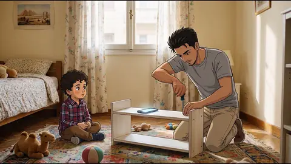
1:09مشروع كبير، خطوات صغيرةمكتبة أنس، خطوة بخطوة.- 1:25العمل يبقى في العملبعد الدوام تختفي مهام العمل.
- 1:43يسجّل وحدهعند الوصول إلى مكان محفوظ يبدأ التسجيل تلقائيًا.
- 1:59أين السيارة؟Daybook يتذكر أين أوقفتها.
- 2:13يومياتكاحكِ يومك، ويرتّبه الذكاء الاصطناعي.
- 2:33اسأل ملاحظاتكسؤال عادي، وإجابة من كلماتك أنت.
- 2:49تقويم واحدعيد ميلاد ماما، وكل شيء آخر، في مكان واحد.
2:38 in English, set in Bristol · 3:10 in Arabic, set in Cairo.
Eight screens, eight reasons
Swipe through. Where a screen has a moment in the film, one tap plays it.
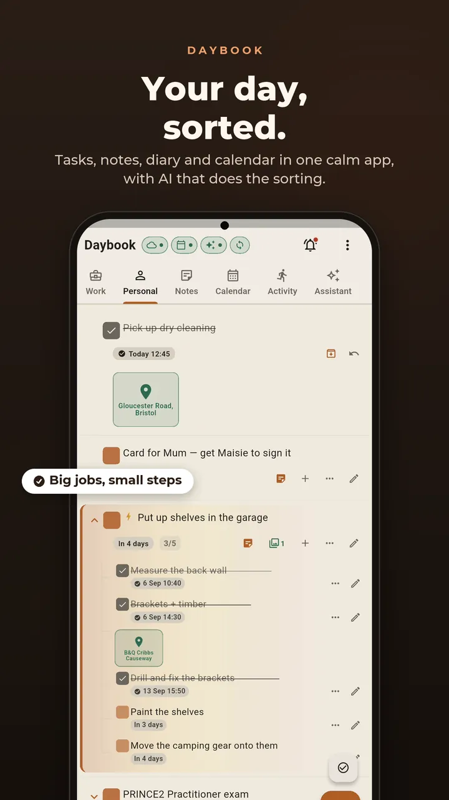
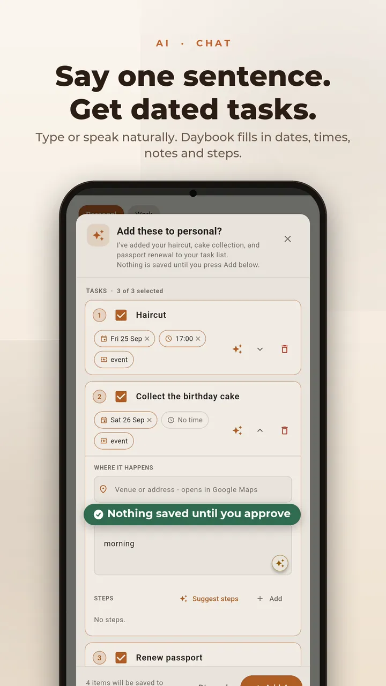
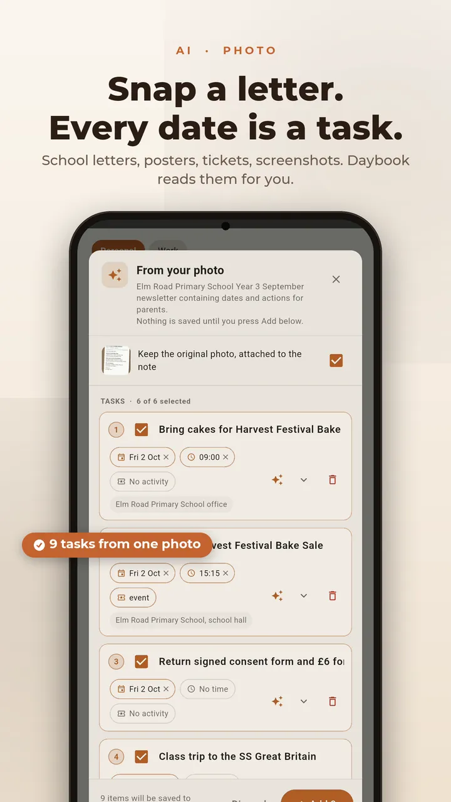
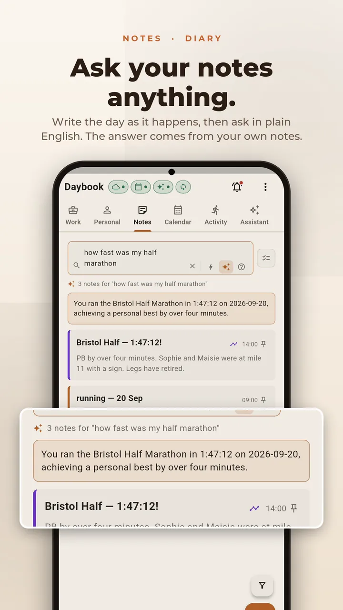
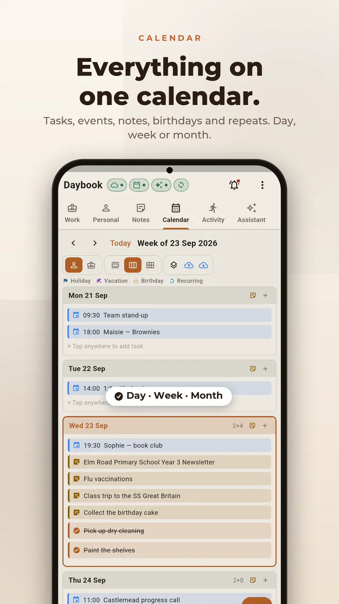
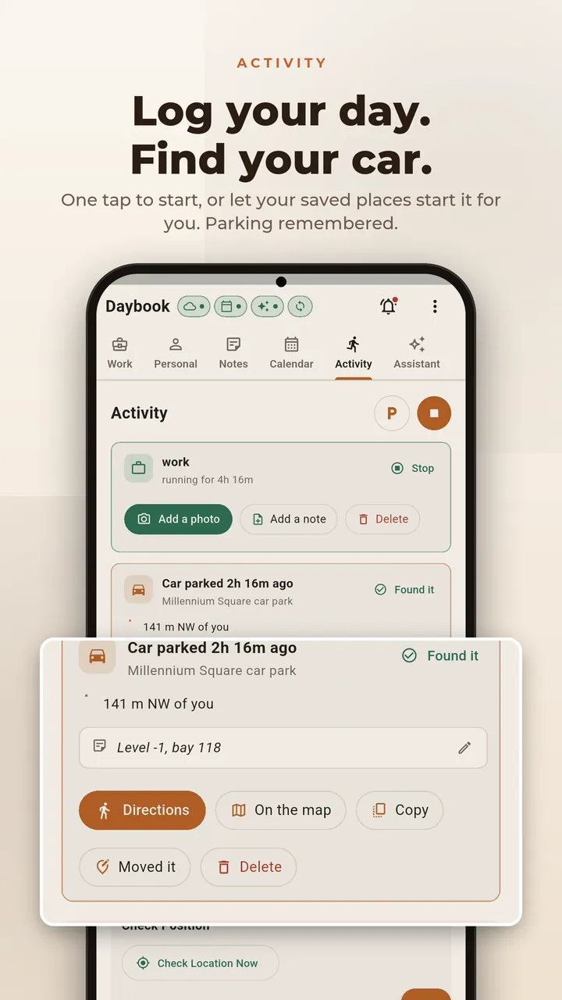
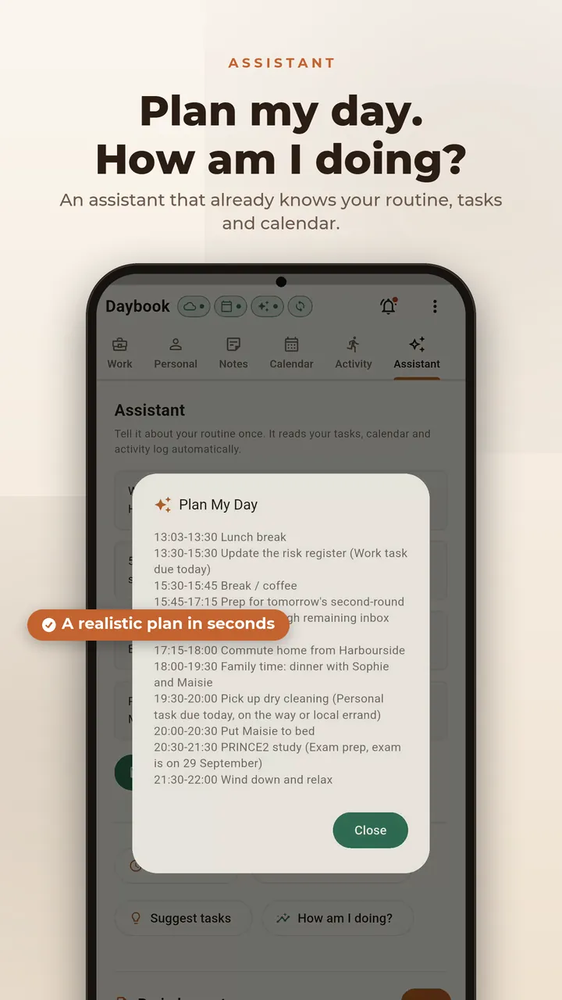
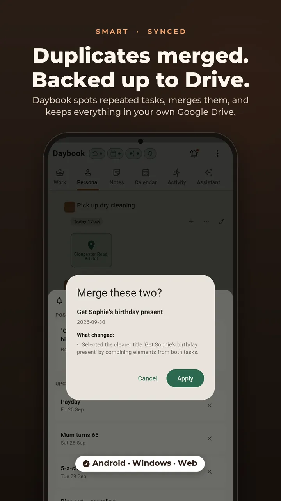
The same Daybook, on your desk
The desktop app pairs with your phone, so a task added on one is on the other.
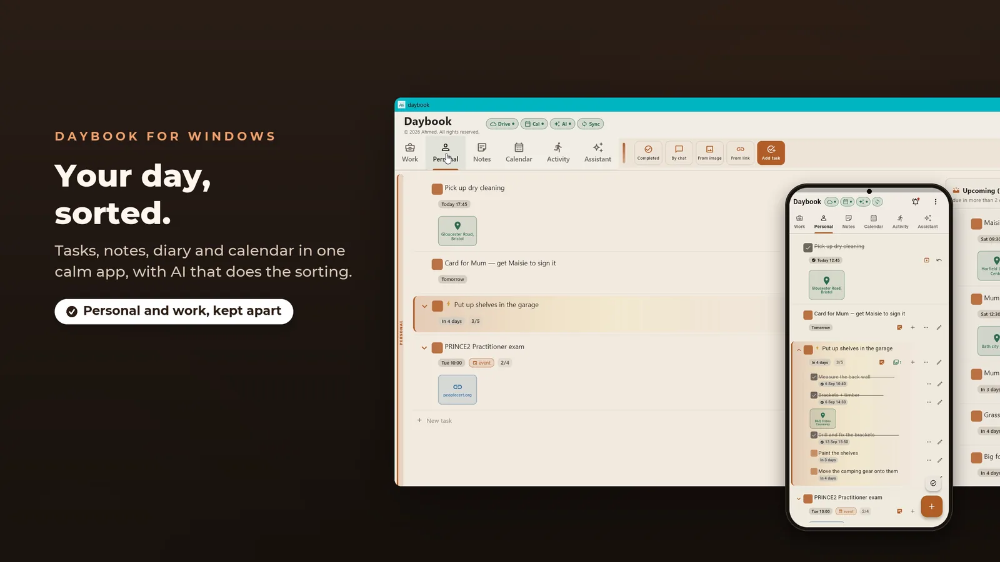
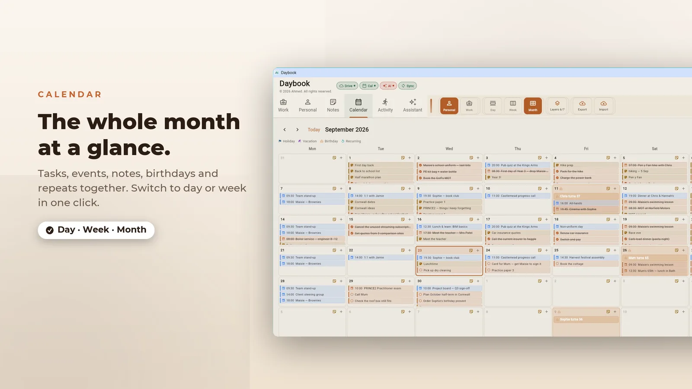
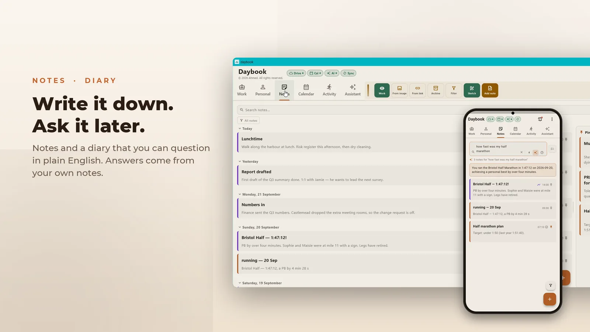
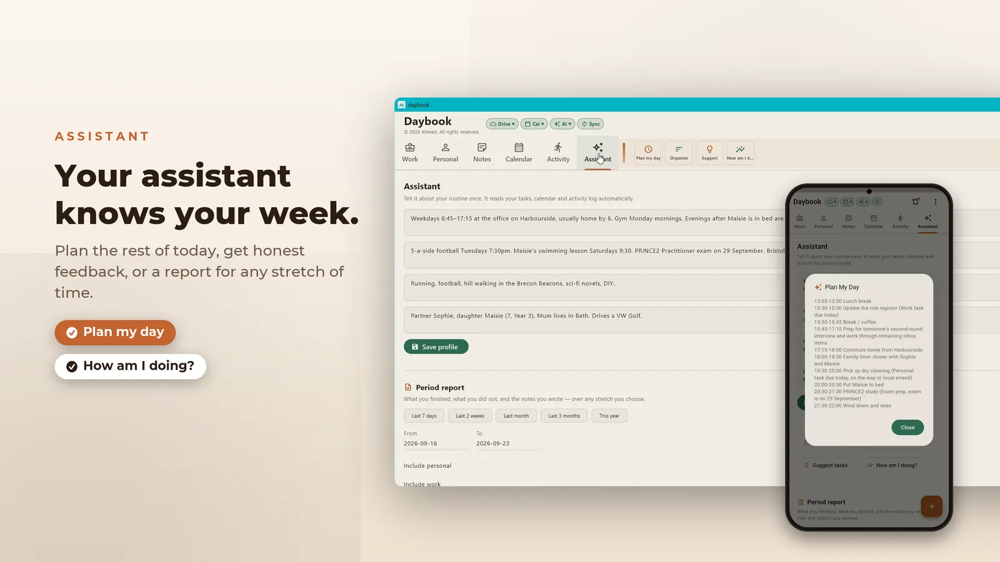
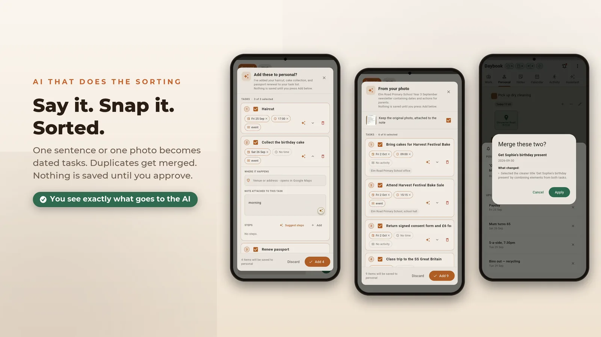
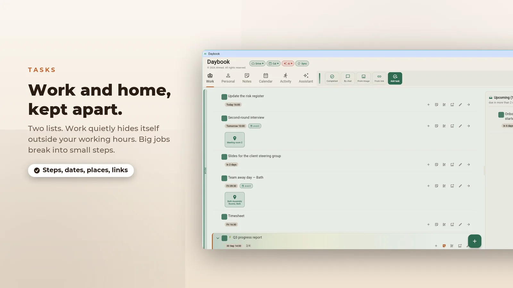
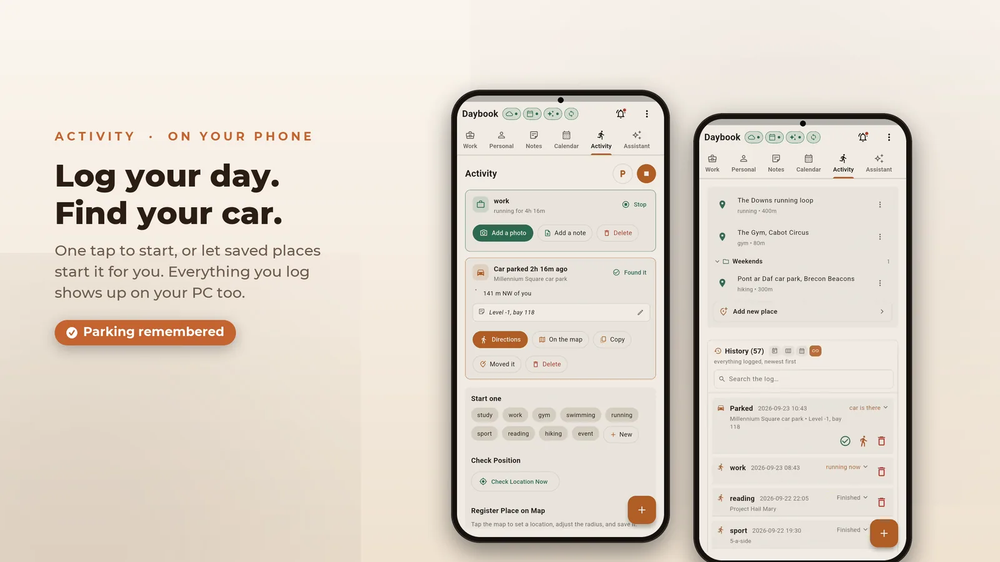
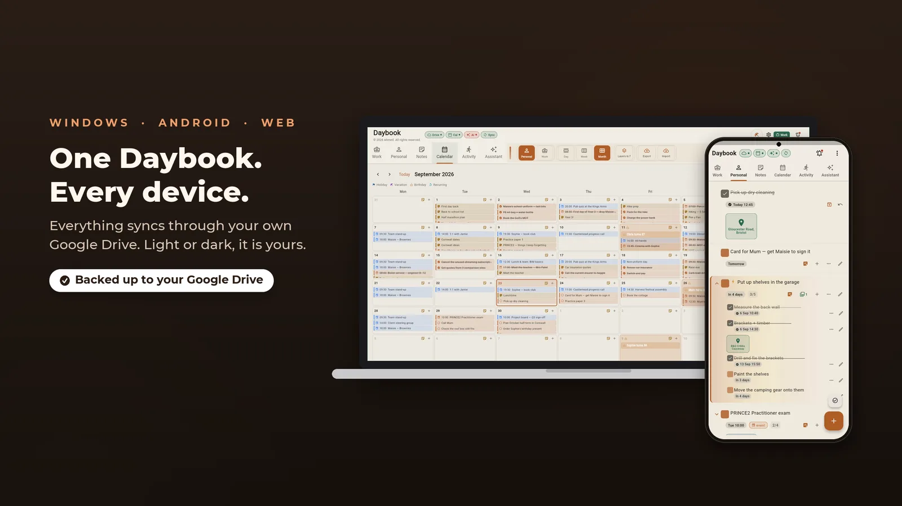
The same pictures as the Microsoft Store listing.
Join the test
Become a tester Closed beta
The browser version needs none of this — it opens and runs. The Android build is in closed testing, so Play only shows it to accounts that joined the tester group. Three steps, once, with the Google account your phone uses.
-
1
Join the tester group
Open to anyone, no approval or waiting. Press Join group on the page that opens.
Join the tester group → Rather not leave a page open? Send a blank email to daybook-testers+subscribe@googlegroups.com and you're joined by reply. -
2
Accept the invitation
Sign in with the same account and press Become a tester.
Become a tester → -
3
Install it
The listing opens for your account once the first two are done.

If Play says the app isn't available, the account on your phone usually isn't the one that joined the group. The test is open in six countries so far; if yours isn't one of them, contact us and we’ll add it. Google Play is a trademark of Google LLC.
Set up your free Gemini key
Daybook’s assistant runs on a Google Gemini key that you create yourself, so the requests go straight from your phone to Google rather than through us. It is free, takes about two minutes, and never asks for a card. Watch it once, or follow the steps.
1 min 18 s · narrated · no sign-up shown
-
Open the AI panel
In Daybook, tap the sparkle button at the top of the screen.
-
Open the help
Tap How do I get a free API key? to expand the short checklist.
-
Go to AI Studio
Press Open AI Studio. It opens
aistudio.google.com/apikeyin your browser. Any Google account works. -
Accept the terms
Tick the acknowledgement box and press Continue. No billing account is created and no card is requested.
-
Create the key
Press Create API key, keep the project it suggests, then press Create key.
-
Copy it straight away
Tap the copy icon next to the key. It is shown once — if you lose it, just make another.
-
Paste it back and save
Return to Daybook, paste the key into the box and press Save. The download icon fills the model list, which is how you know it works.
It’s yours. All of it.
No Daybook server, no sign-up, no tracking. Pick anything Daybook handles to see where it goes.
Why Daybook asks for a Google account
Signing in is optional and the app works fully without it. It's there so Daybook can back up to your Drive and write dated tasks into your calendar. Here is every permission it asks for.
Drive backup drive.file
https://www.googleapis.com/auth/drive.file
Uploads a copy of Daybook's database and the images attached to your notes, so you can restore on a new device or keep two in step. This scope reaches only files Daybook created. It can't list or open anything else in your Drive, and the backup sits in your account, not ours.
Calendar sync calendar
https://www.googleapis.com/auth/calendar
Dated tasks you choose to sync appear as events in your own calendar. Notes and the activity log are never written. This is the desktop route. On Android, Daybook writes to the device's own calendar with the ordinary OS permission and no Google account at all, which is what the Play version uses today.
Email and basic profile openid · email · profile
Read once after sign-in, so the app can show you which account is connected. Daybook doesn't read your contacts or your mail.
Tokens are stored on your device alongside the database and used only for the calls above. You can withdraw access at any time at myaccount.google.com/permissions.
What it doesn't do
- No ads, no analytics, no trackers.
- No account to create, and no server of ours holding your entries.
The privacy policy goes feature by feature, including location, microphone and camera, and says where each one sends data or that it sends none.
Platforms
- Web
- Open it in your browser — no install, no tester group. Sign in with Google to back up and sync; the rest works without one.
- Android
- On Google Play as Daybook (
com.MAIAArchitech.daybook). In closed testing — join the test to install it. - Windows
- Desktop build on the Microsoft Store, with an optional pairing link to the phone app.
- Storage
- One SQLite database inside the app's own storage, which other apps on the device can't read.
Questions
Does it work without a Google account?
Does it work offline?
What does it cost?
Found a bug, or want something added? Contact us. It reaches the developers who build it.